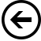

Operadores Lógicos


Eles permitem realizar operações de comparação e combinação de valores booleanos, ou seja, valores que podem ser verdadeiros (true) ou falsos (false).
Eles não servem para comparar resultados de expressões ou números, eles apenas servem para comparar outros resultados lógicos .